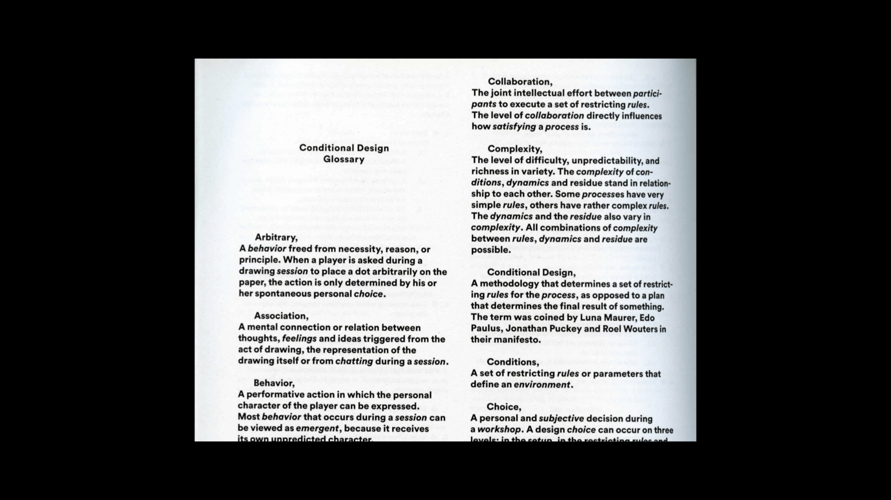
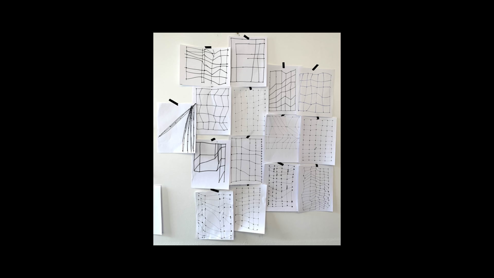
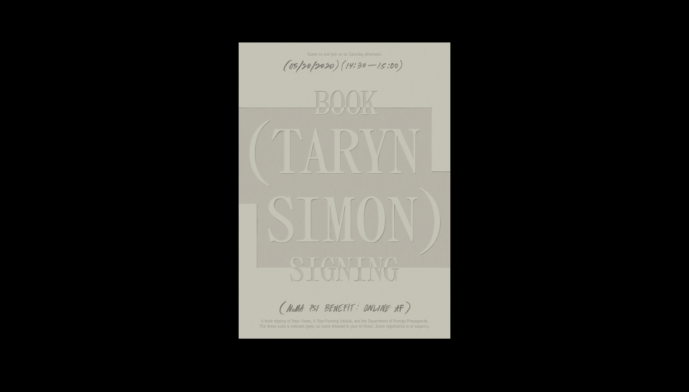

STUFF
“
…So how does an archivally inferi
”
yoko ono "grapefuit" — Feb 2022
I personally thought this excerpt stood out most to me because I have three younger brothers.

studio moniker "conditional design" — mar 2022
I found it really interesting that the book had some sort of glossary at the end. I loved how they decided to write their own definitions of waht each word meant, even if there were really simple/common words.
“
The game can be played meaningfully only if each player develops individual goals.
”
Habraken "concept design games" — Feb 2022
Although I do not play games, I thought this approach was really compelling because it gives players a sense of accomplishment and progression, which lets them realize games aren't just meaningless forms of entertainment.
“
Your brother is the man you killed
in the past world. He was born in
your family because he wanted to be near you.
”
yoko ono "grapefuit" — Feb 2022
I personally thought this excerpt stood out most to me because I have three younger brothers.

1. Take a thick marker and make a point on the top right corner of the paper, do not lift
the marker. Let the ink bleed for at least 1-15 seconds.
instruction set — Mar 2022
1. Take a thick marker and make a point on the top right corner of the paper, do not lift
the marker. Let the ink bleed for at least 1-15 seconds.
2. Lift the pen and make another dot below it. Let the ink bleed.
3. Repeat that several times until all the different sized dots roughly form a vertical line along
the whole paper. Doesn’t matter if some dots are further or closer away to each other.
4. Repeat that 5 more times. You should now have 6 vertical lines that are each formed by the dots.
Make sure the lines are separated. You can also try making some lines closer or further away from
each other.
5. Take a pen and very quickly draw a vertical line through the first set of dots.
Do that for the rest.
6. Now take the pen and try to connect the first dot from all six lines. At the end you should have
a horizontal line that goes across the page.
7. Do that multiple multiple times so that at the end you have a web/grid.
“
... each of our personal computers have become idiosyncratic, individualized entities, only sometimes manageable by the owners.
”
j.r. carpenter "a handmade web" — Feb 2022

A series of three posters based on MoMA PS1's "Online
Moma pS1 poster series — March 2021
A series of three posters based on MoMA PS1's "Online
Af Benefit." I tried mixing steady compositions,
influenced by InDesign's text highlight feature, with
organic, analog touches centered on each artists
field of work.
southeast asian coins — March 2021
This is a website of a coin collection. The chart,
inspired by cosmic maps and Chinese zodiac calendars,
allows users to sort and filter through all kinds of
coins from Southeast Asia.